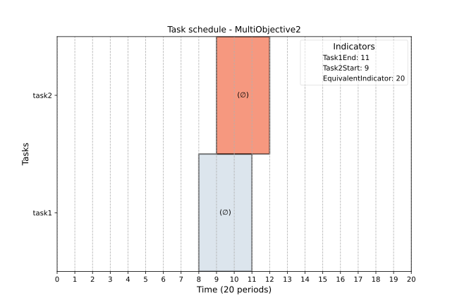
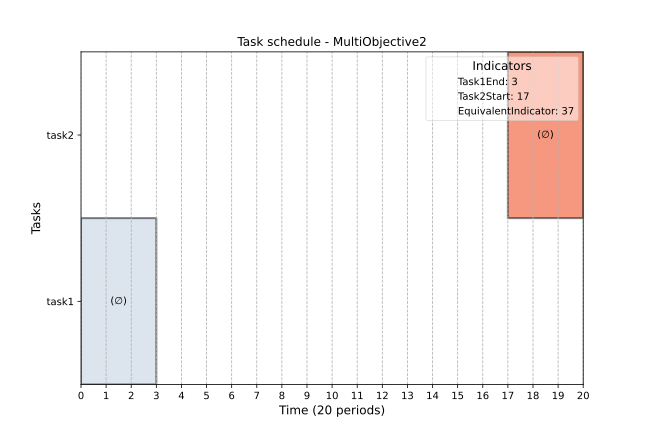
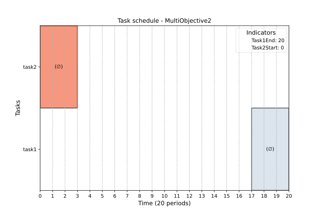

Objective¶
ProcessScheduler is able to compute optimized schedules according to one (single optimization) or any number (multi-objectives) of objectives.
An objective targets the optimum value for an Indicator or any of the variables defined in the scheduling problem:
-
if the target value is known, then the objective can either be
ExactObjective, -
it the target value is unknown but you want to find a minimal or maximal value, the the objective can be the result from an optimization resolution,
ObjectiveinimizeIndicatororObjectiveMaximizeIndicator.
Warning
Setting any kind of objectives turns the scheduling problem into an optimization problem. This will result in heavier computations and, thus, a longer time for the problem to be solved.
Builtin optimization objectives¶
Available builtin objectives are listed below:
| Type | Kind | Description |
|---|---|---|
| ObjectiveMinimizeMakespan | Minimize | Minimize the schedule horizon |
| ObjectiveMaximizeResourceUtilization | Maximize | Number of tardy tasks from the selected tasks |
| ObjectiveMinimizeResourceCost | Maximize | Maximum lateness of selected tasks |
| ObjectivePriorities | Minimize | Resource utilization, from 0% to 100% of the schedule horizon, of the selected resource |
| ObjectiveTasksStartLatest | Single resource | Number of tasks assigned to the selected resource |
| ObjectiveTasksStartEarliest | List of resources | Total cost of selected resources |
| ObjectiveMinimizeFlowtime | Buffer | Maximum level of the selected buffer |
| ObjectiveMinimizeFlowtimeSingleResource | Buffer | Minimum level of the selected buffer |
| ObjectiveMaximizeMaxBufferLevel | Buffer | Minimum level of the selected buffer |
| ObjectiveMinimizeMaxBufferLevel | Buffer | Minimum level of the selected buffer |
Custommized objectives¶
You can create your own objective using the ObjectiveMaximizeIndicator and ObjectiveMinimizeIndicator classes.
Available solvers : incremental and optimize¶
The default optimization solver is incremental. After a solution is found, the solver will run again and again to find a better solution until the maximum allowed time is reached. If you provide a small max_time value, the solver will exit to the last found value, but there may be a better value. In that case, just increase the max_time and run again the solver.
solver = ps.SchedulingSolver(problem=pb,
max_time=300) # 300s is 5 minutes
solution = solver.solve()
The other available solver is called optimize, which use the builtin optsmt z3-solver. The computation cannot be interrupted, so be careful if the problem to solve involves many tasks/resources. However, the :funcoptimize is guaranteed to return the optimal value.
solver = ps.SchedulingSolver(problem=pb,
optimizer="optimize") # 300s is 5 minutes
solution = solver.solve()
Single objective optimization¶
Imagine you need to schedule one specific task task_1 the later. After you defined the task as usual, then create the objective and set the optimization target:
pb = ps.SchedulingProblem(name='SingleObjective1', horizon=20)
task_1 = ps.FixedDurationTask(name='task1', duration = 3)
indicator_1 = ps.IndicatorFromMathExpression(name='Task1End',
expression=task_1._end)
ps.ObjectiveMaximizeIndicator(name='MaximizeTask1End',
target=indicator_1)
solution=ps.SchedulingSolver(problem=pb).solve()
ps.render_gantt_matplotlib(solution)
The expected value for the indicator_1 maximization is 20. After running the script, you may get the following output:
Solver type:
===========
-> Standard SAT/SMT solver
Incremental optimizer:
======================
Found value: 3 elapsed time:0.007s
Checking better value > 3
Found value: 4 elapsed time:0.007s
Checking better value > 4
Found value: 5 elapsed time:0.007s
Checking better value > 5
Found value: 6 elapsed time:0.007s
[...]
Found value: 19 elapsed time:0.008s
Checking better value > 19
Found value: 20 elapsed time:0.009s
Checking better value > 20
Can't find a better solution for problem SingleObjective1.
Found optimum 20. Stopping iteration.
total number of iterations: 19
value: 20
SingleObjective1 satisfiability checked in 0.01s
The solver returns the expected result.
Multiple objective optimization, weighted objective¶
Note
ProcessScheduler can deal with multiple objectives optimization. There is no limitation regarding the number of objectives.
To illustrate the multiple objective optimization problem, and the balance it might underline, let's consider the following example where we create a dependency between two tasks:
According to this constraint,This looks like a kind of balance: the later task_1 is scheduled, the sooner task_2 is scheduled. Thus, maximizing (resp. minimizing) both task_1 end and task_2 start leads to a contradiction. The purpose of the following of this section is to deal this contradiction.
Optimization solver, incremental solver (default)¶
As for single optimization, the incremental solver is the default for multiple optimization.
Note
The Objective class has an optional weight parameter set by default to 1. This is an integer value. The higher it is, the more important the objective. In case of a multiple objective \(O_i\) optimization process, each objective weighted with \(w_i\) then the optimization (min or max) applies to \(\sum{w_i O_i}\).
Here is how we would do with ProcessScheduler:
import processscheduler as ps
pb = ps.SchedulingProblem(name='MultiObjective2', horizon=20)
task_1 = ps.FixedDurationTask(name='task1', duration = 3)
task_2 = ps.FixedDurationTask(name='task2', duration = 3)
pb.add_constraint(task_1._end == 20 - task_2._start)
indicator_1 = ps.IndicatorFromMathExpression(name='Task1End', expression=task_1._end)
indicator_2 = ps.IndicatorFromMathExpression(name='Task2Start', expression=task_2._start)
ps.ObjectiveMaximizeIndicator(name='MaximizeTask1End', target=indicator_1, weight=1)
ps.ObjectiveMaximizeIndicator(name='MaximizeTask2Start', target=indicator_2, weight=1)
solution = ps.SchedulingSolver(problem=pb).solve()
ps.render_gantt_matplotlib(solution)
Here the equivalent weighted objective is \(task_1.\_end + task_2.\_start\), obviously equal to \(20\) according to the constraint before.

Let's now see what happens if we set the weight of the second objective to 2, that is to say it is twice important than the first one. Then the equivalent objective is \(task_1.\_end + 2 \times task_2.\_start\), which
ps.ObjectiveMaximizeIndicator(name='MaximizeTask1End', target=indicator_1, weight=1)
ps.ObjectiveMaximizeIndicator(name='MaximizeTask2Start', target=indicator_2, weight=2)
Then we get an other schedule:

Multiple objective optimization using the optimize solver¶
Unlike the incremental_solver, which optimizes a weighted equivalent objective function, the optimize solver works a bit differently.
The "optimize" solver has to be explicitly called at the solver construction time, as well as the priority algorithms used : lex, box or pareto.
Lexicon priority ('lex')¶
The solver optimizes the first objective, then the second one while keeping the first value, then the third one keeping both previous values etc.
In the previous example, the first objective to be optimized will be the end of task_1, obviously 20. Then, this value being fixed, there's no other solution than start of the second task is 0, then task_2 end will be 3.
solver = ps.SchedulingSolver(problem=pb,
optimizer="optimize",
optimize_priority='lex')
solver.solve()

Box priority ('box')¶
The optimization solver breaks the dependency between objectives and look for the maximum (resp. minimum) value that can be achieved for each objective.
In the previous example, the maximum of task_1end can be 20, and the maximum of task_2.end can also be 20, but not at the same time. The box priority then gives an information about the values that can be reached.
solver = ps.SchedulingSolver(problem=pb,
optimizer="optimize",
optimize_priority='box')
solver.solve()
Note
In box mode, both objectives may not be reached simultaneously, the solver will give anyway a solution that satisfies all constraints (by default the solution obtained from the lexicon mode).
Pareto priority ('pareto')¶
The optimization solver suggests a new solution each time the solve() method is called. This allows traversing all solutions. Indeed we can have the task_1 end to 20 and task_2 end 3, but also the task_1 end to 19 and task_2 end to 4 etc. These all are solutions for the optimization problem.
The python code has to be slightly modified:
solver = ps.SchedulingSolver(problem=pb,
optimizer="optimize",
optimize_priority='pareto')
solution = solver.solve()
while solution:
print("Found solution:")
print("\t task_1.end: f{solution.tasks[task_1.end]}")
print("\t task_2.start: f{solution.tasks[task_2.start]}")
solution = solver.solve()
The solver gives the 18 different solutions for this optimize problem.
Solver type:
===========
-> Builtin z3 z3.Optimize solver - 'pareto' mode.
Total computation time:
=====================
MultiObjective2 satisfiability checked in 0.00s
MaximizeTask1End Value : 3
MaximizeTask2Start Value : 17
Found solution:
task_1.end: f{solution.tasks}
task_2.start: f{solution.tasks}
Total computation time:
=====================
MultiObjective2 satisfiability checked in 0.00s
MaximizeTask1End Value : 4
MaximizeTask2Start Value : 16
Found solution:
task_1.end: f{solution.tasks}
task_2.start: f{solution.tasks}
Total computation time:
=====================
MultiObjective2 satisfiability checked in 0.00s
MaximizeTask1End Value : 5
MaximizeTask2Start Value : 15
Found solution:
task_1.end: f{solution.tasks}
task_2.start: f{solution.tasks}
Total computation time:
=====================
MultiObjective2 satisfiability checked in 0.00s
MaximizeTask1End Value : 6
MaximizeTask2Start Value : 14
Found solution:
task_1.end: f{solution.tasks}
task_2.start: f{solution.tasks}
Total computation time:
=====================
MultiObjective2 satisfiability checked in 0.00s
MaximizeTask1End Value : 7
MaximizeTask2Start Value : 13
Found solution:
task_1.end: f{solution.tasks}
task_2.start: f{solution.tasks}
Total computation time:
=====================
MultiObjective2 satisfiability checked in 0.00s
MaximizeTask1End Value : 8
MaximizeTask2Start Value : 12
Found solution:
task_1.end: f{solution.tasks}
task_2.start: f{solution.tasks}
Total computation time:
=====================
MultiObjective2 satisfiability checked in 0.00s
MaximizeTask1End Value : 9
MaximizeTask2Start Value : 11
Found solution:
task_1.end: f{solution.tasks}
task_2.start: f{solution.tasks}
Total computation time:
=====================
MultiObjective2 satisfiability checked in 0.00s
MaximizeTask1End Value : 10
MaximizeTask2Start Value : 10
Found solution:
task_1.end: f{solution.tasks}
task_2.start: f{solution.tasks}
Total computation time:
=====================
MultiObjective2 satisfiability checked in 0.00s
MaximizeTask1End Value : 11
MaximizeTask2Start Value : 9
Found solution:
task_1.end: f{solution.tasks}
task_2.start: f{solution.tasks}
Total computation time:
=====================
MultiObjective2 satisfiability checked in 0.00s
MaximizeTask1End Value : 12
MaximizeTask2Start Value : 8
Found solution:
task_1.end: f{solution.tasks}
task_2.start: f{solution.tasks}
Total computation time:
=====================
MultiObjective2 satisfiability checked in 0.00s
MaximizeTask1End Value : 13
MaximizeTask2Start Value : 7
Found solution:
task_1.end: f{solution.tasks}
task_2.start: f{solution.tasks}
Total computation time:
=====================
MultiObjective2 satisfiability checked in 0.00s
MaximizeTask1End Value : 14
MaximizeTask2Start Value : 6
Found solution:
task_1.end: f{solution.tasks}
task_2.start: f{solution.tasks}
Total computation time:
=====================
MultiObjective2 satisfiability checked in 0.00s
MaximizeTask1End Value : 15
MaximizeTask2Start Value : 5
Found solution:
task_1.end: f{solution.tasks}
task_2.start: f{solution.tasks}
Total computation time:
=====================
MultiObjective2 satisfiability checked in 0.00s
MaximizeTask1End Value : 16
MaximizeTask2Start Value : 4
Found solution:
task_1.end: f{solution.tasks}
task_2.start: f{solution.tasks}
Total computation time:
=====================
MultiObjective2 satisfiability checked in 0.00s
MaximizeTask1End Value : 17
MaximizeTask2Start Value : 3
Found solution:
task_1.end: f{solution.tasks}
task_2.start: f{solution.tasks}
Total computation time:
=====================
MultiObjective2 satisfiability checked in 0.00s
MaximizeTask1End Value : 18
MaximizeTask2Start Value : 2
Found solution:
task_1.end: f{solution.tasks}
task_2.start: f{solution.tasks}
Total computation time:
=====================
MultiObjective2 satisfiability checked in 0.00s
MaximizeTask1End Value : 19
MaximizeTask2Start Value : 1
Found solution:
task_1.end: f{solution.tasks}
task_2.start: f{solution.tasks}
Total computation time:
=====================
MultiObjective2 satisfiability checked in 0.00s
MaximizeTask1End Value : 20
MaximizeTask2Start Value : 0
Found solution:
task_1.end: f{solution.tasks}
task_2.start: f{solution.tasks}
No solution can be found for problem MultiObjective2.
Reason: Unsatisfiable problem: no solution exists
Total computation time:
=====================
MultiObjective2 satisfiability checked in 0.00s